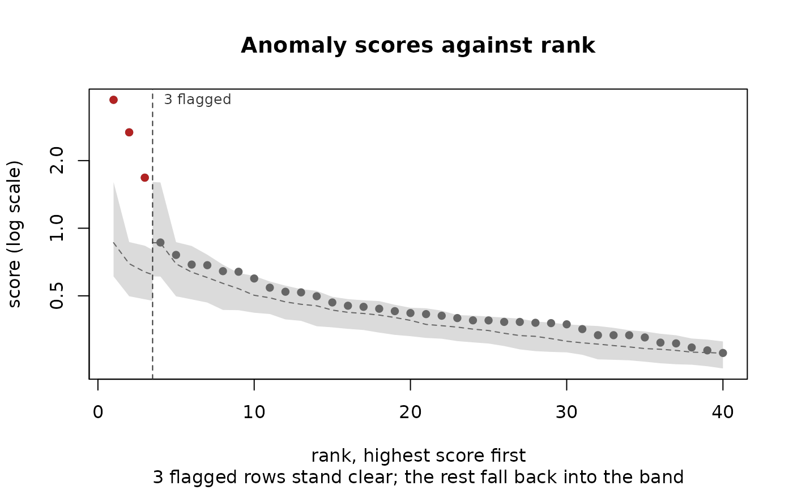
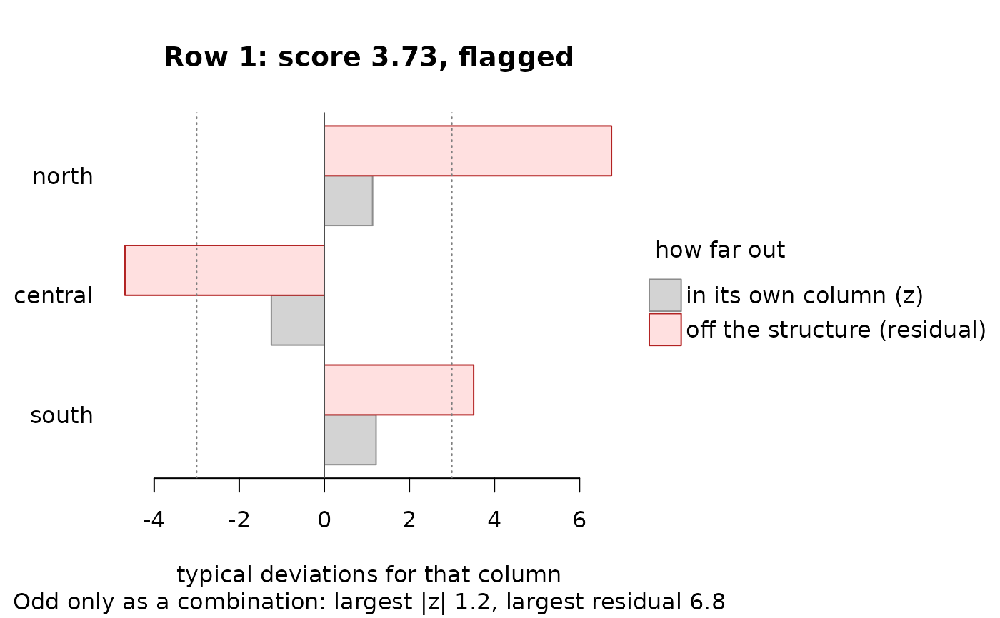
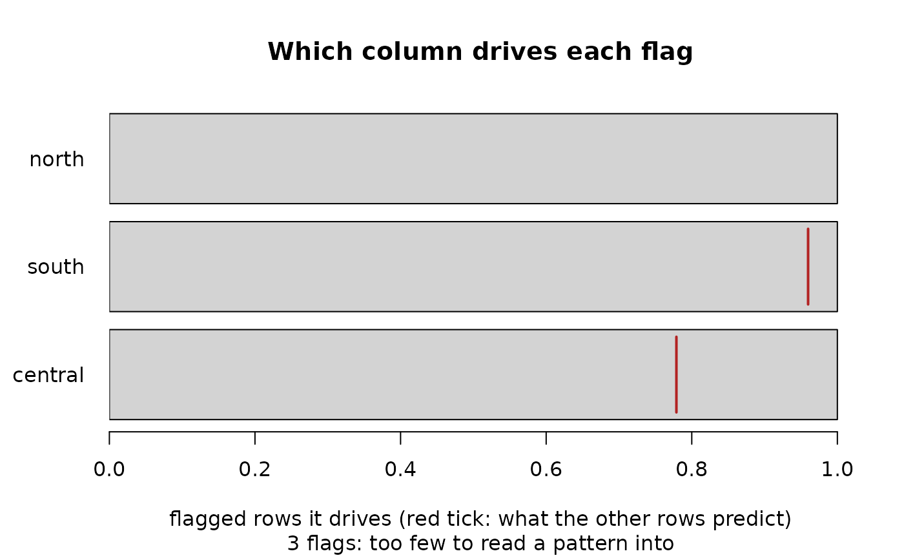
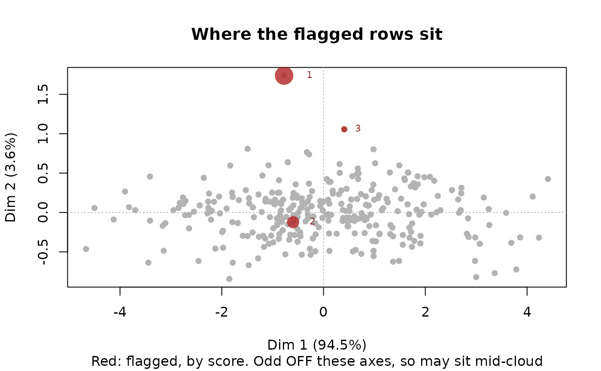

Four views of an ilm_anomaly() result. The default, "scores", is the one
that decides what to do next: whether the flagged rows stand apart from the
rest, or are only the top few percent of a smooth continuum that the
threshold happened to cut. A ranked table cannot tell those apart; the
shape of the sorted scores can.
Usage
ilm_plot_anomaly(
x,
type = c("scores", "drivers", "map", "row"),
row = NULL,
top_n = NULL,
data = NULL,
main = NULL,
...,
pch = NULL
)Arguments
- x
An
ilm_anomaly()result.- type
Which view:
"scores"(the default),"drivers","map"or"row".- row
For
type = "row", the row to show, numbered as in the scanned data – therowcolumn of the result. Defaults to the highest-scoring row.- top_n
How much to show: ranks for
"scores"(by default the larger of 40 and three times the number flagged), columns for"drivers"(15) and"row"(20). Ignored by"map".- data
The data frame that was scanned, for
"map"and"row". Only needed if the result did not keep it – seekeep_datainilm_anomaly().- main
Plot title.
- ...
Passed to
tinyplot::tinyplot().- pch
Plotting character for the points in
"scores"and"map". Takes a name as well as a number:"filled circle"is 16, and every code from 0 to 25 has one.
Value
NULL, invisibly. The verdict is written on the plot, and where it
calls for a remedy it is also given as a message.
The four views
"scores"– every row's score against its rank, highest first, with a line at the number flagged. For the default reconstruction method a band shows where 95% of the datasets the scan simulated, which have the same structure and no anomalies, put the score at each rank. Genuine outliers are a few points well above the band, after which the curve drops back into it. A continuum has no break: the rows after the line keep scoring above what clean data produce. When that happens the plot says so, and the choice is to say plainly that you are reporting a fixed share of the rows, or to treat the tail as structure rather than as outliers –ilm_profile()looks for the groups in it."drivers"– how many flagged rows each column drives, with a tick at the count the drivers of the unflagged rows would predict. When one column drives nearly every flag the problem is usually in that column – a unit, a sentinel code, a misplaced decimal – rather than in how the columns combine. Look at it on its own withilm_outliers()orilm_describe(), and recode sentinels withilm_recode_errors()."map"– every scored row on the first two dimensions ofilm_reduce(), in grey, with the flagged rows in red and sized by score. Flagged rows that sit together may be one problem repeated or one subpopulation, andilm_profile(x)takes the flagged rows and describes them. A reconstruction anomaly is odd off the main dimensions, so it need not sit at the edge of this map: the view shows whether the flagged rows are alike, not whether they are extreme. Needs the PCAmixdata package, asilm_reduce()does."row"– one row, column by column: its z-score, which is how unusual each value is in its own column, beside its residual, which is how far the value sits from where the structure shared by the other rows puts it. The residual is divided by that column's typical residual (its median absolute deviation across rows), so that 3 means unusual on both bars; unscaled, a residual of 0.8 is large in a column the structure explains well and ordinary in one it barely explains. A small |z| beside a large residual is a row that is odd only as a combination – the case the reconstruction exists for, and the one a column-at-a-time scan cannot see. The columns are ordered by that scaled residual, so the top bar need not be thedriverin the table, which is the column contributing most to the score.
Why the band restarts at the line
The band the scan simulates is for data with no anomalies at all. Set the flagged rows aside and every remaining row moves up by that many ranks, so against the band as it stands a perfectly clean remainder scores too high for a long stretch and genuine outliers look like a continuum. Over 60 scans of 400 rows each, the share of the ranks after the line sitting above the band as simulated averaged 0.69 with 2% planted anomalies and 0.65 with 5% – not far short of the 0.82 to 1.00 of noise that genuinely has heavy tails.
So right of the line the band is redrawn for the unflagged rows on their
own: their j-th highest score against the reference at the rank that
matches it in quantile, j * n / (n - m) for m rows flagged out of n.
The band steps up at the line because of this, and the step is the point:
the remainder should begin where a clean dataset's highest scores do.
How far to trust the verdict
It is a reading of the band, not a test. Over the first max(20, 2m)
ranks after the line it takes the share still scoring above the band:
under a quarter, the flagged rows stand clear; three quarters or more,
there is no break, and the message names the remedy; in between, the break
is not clean and the plot says only that.
Nothing is read off the band when nothing is flagged. The band inherits
the reference's slightly light upper tail – ilm_anomaly() reports the
same thing as the raw p-value running hot – and in data with no anomalies
at all the top twenty scores sat at least half above it in 21 scans of 100.
Measured on fresh scans of 400 rows by 8 columns with a rank-2 structure, 100 per condition, counting the scans that flagged anything:
flagged stand no clean no
anything clear break break
2% planted anomalies 100 89 11 0
5% planted anomalies 100 97 3 0
a single planted anomaly 90 65 17 8
noise with t tails, 10 df 65 14 19 32
noise with t tails, 5 df 98 7 26 65
noise with t tails, 3 df 100 11 31 58Planted anomalies are almost never called a continuum; heavy tails are called one in half to two thirds of the scans that flag anything, and said to stand clear in 7 to 22% of them. Size matters: at 200 rows by 6 columns the t tails were called a continuum in 21 of 53 and 16 of 60 scans, and at 1000 rows by 12 in 58 and 52 of 60, with planted anomalies called one in at most 4 of 60 at either size. When the verdict and the picture seem to disagree, trust the picture and look at how far above the band the points after the line sit.
Isolation forests
method = "iforest" has no null behind its score, so "scores" draws no
band and labels the line as what it is: the share of rows you chose to call
anomalous, not a test. "row" needs the residuals from a fitted structure
and stops. "drivers" and "map" work for both methods.
References
Atkinson, A. C. (1981). Two graphical displays for outlying and influential observations in regression. Biometrika 68, 13-20.
See also
ilm_anomaly(), ilm_anomalous() for the flagged rows as a data
frame, ilm_profile(), ilm_outliers().
Examples
set.seed(1)
n <- 300
f <- rnorm(n)
d <- data.frame(north = f + rnorm(n, 0, .3), central = 2 * f + rnorm(n, 0, .3),
south = -f + rnorm(n, 0, .3))
## three rows that are ordinary in every column but break the pattern
d[1:3, ] <- rbind(c(1.2, -2.4, 1.2), c(-1, 2, 1), c(0.8, 1.6, 0.8))
a <- ilm_anomaly(d, progress = FALSE)
ilm_plot_anomaly(a) # do the flagged rows stand apart?

ilm_plot_anomaly(a, "row") # the top row, column by column

ilm_plot_anomaly(a, "drivers")

# \donttest{
if (requireNamespace("PCAmixdata", quietly = TRUE))
ilm_plot_anomaly(a, "map")

# }